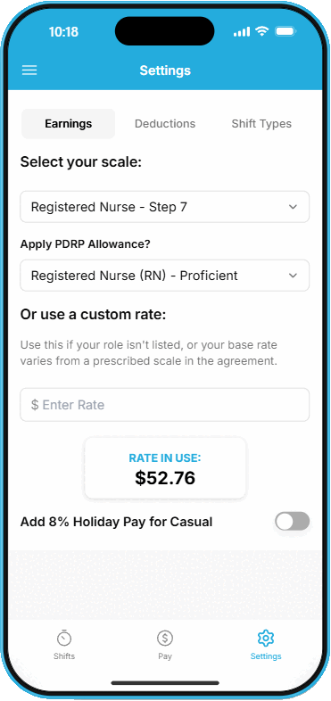

1

Get set up once, relax forever
Your pay, your way
Enter your payscale or pop in your exact rate straight from your payslip — no guessing.
Casual friendly
Tick a box and 8% holiday pay is added automatically to your gross income.
Deductions sorted
KiwiSaver, Student Loan, NZNO Levy, even secondary tax codes — all handled for you.
Declutter your shifts
Hide shift types you never use so your dropdown stays clean and quick.